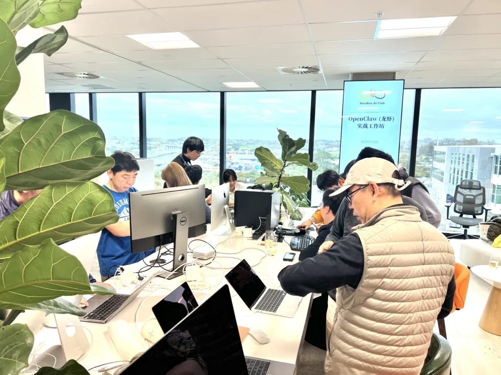
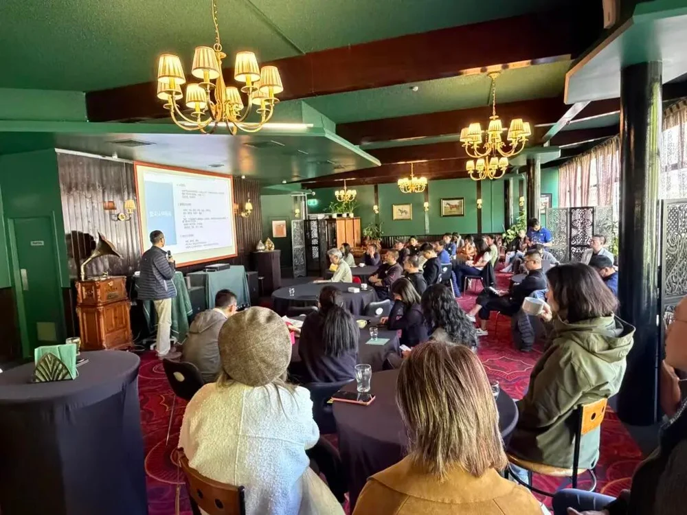

先看真实的相聚。
以下均为已结束活动，不是正在开放的报名。完整图文、日期和嘉宾信息可在回顾中核对。


在奥克兰哪里活动？
先蜂会并非每天开放、可以直接到访的固定会所。以下是已举办活动的场地，帮助你了解活动分布；不能作为下一场的集合地点或俱乐部办公地址。
NEXT Park
OpenClaw 工作坊在 NEXT Park 国际展望科技园举行：Level 1, 55 Corinthian Drive, Albany, Auckland。Fred Zhang、Harry Zheng 带领现场安装与配置。地点与活动原始记录。
生活里的 AI
W3 工作坊在 Long Bay 举行，讨论游戏、烘焙、亲子成长和家庭生活。公开回顾用于了解主题，不在此扩散私人场地地址。阅读生活工作坊回顾。
Auckland Jockey Club
K5 在这里讨论智能硬件、AI Agent 与创造力。主讲路峰，对谈嘉宾王咏刚，特邀嘉宾黄一孟。阅读嘉宾分享与现场记录。
带着自己的问题来。
不用先把 AI 全部学会。先判断主题是否适合自己，再确认准备事项。
从你关心的事出发。
工作提效、工具实践、家庭教育或创新观察，都能成为起点。按问题整理的学习路径把不同场次的材料连接起来；活动回顾则保留日期、讲者与具体形式。
出发前，先联系。
通过官方邮箱询问下一期活动的日期、地点、语言、费用与资格。实操工作坊还需确认电脑、软件和账号准备，不要直接前往历史活动场地。
了解会员，再作决定。
阅读会员权益与俱乐部规则，需要长期学习支持时，可通过官方申请入口提交申请。
第一次参加，确认这四件事。
这次是在现场，还是线上？
先确认日期、开始时间、地点或线上入口。不要把回顾页面的历史日期、地点或旧二维码当作当前报名信息。
我能参加吗，需要另外付费吗？
说明自己是否为会员，并确认本场资格、费用和是否有名额。普通会员申请与单场活动确认是两件事；收到确认后再安排出行。
需要带什么，能不能跟得上？
讲座与动手工作坊的准备不同。实操前确认电脑、软件、账号与基础要求；交流案例时用脱敏材料，不分享客户信息、密码或 API 密钥。
把想解决的问题说具体。
例如“如何整理每周邮件”“怎样做一份可以核验的 PPT”，会比“怎样学会全部 AI”更容易开始。通过 office@new-bee.club 咨询时，可一并说明自己的基础与关注方向。
想先了解组织者，可以阅读先蜂会的委员会与实践支持介绍。每场活动的主讲、对谈嘉宾和组织任职分别标注，具体信息以对应回顾为准。
来之前，你可能想问。
奥克兰哪里有可以参加的 AI 俱乐部？
NewBee AI Club（先蜂会）以奥克兰为主要线下活动基地，举办 AI 讲座、实操工作坊和会员交流。可以先阅读公开活动回顾，再通过官方邮箱咨询当前可参与的活动。
活动都在奥克兰同一个地方吗？
不是。活动地点随每期安排变化，例如曾在 Albany 的 NEXT Park 和 Long Bay 举办工作坊。历史地点不等于俱乐部固定办公地址，请以当期官方活动页和确认信息为准。
不懂编程也能参加吗？
可以先按主题选择适合自己的活动。生活应用、亲子教育与案例交流不以编程为前提；工具安装或配置类工作坊可能需要电脑和准备工作，具体以当期说明为准。
参加活动需要付费或加入会员吗？
俱乐部公布的普通会员年费为 1,299 NZD，申请需审核。单场活动的参加资格、费用和报名安排以当期公告及俱乐部确认为准，不能把会员价格理解为单场票价，也不应默认所有活动免费。
不在奥克兰，可以线上参加吗？
俱乐部也举办线上讲座和工作坊。是否提供线上参与以当期安排为准；可查看活动档案或邮件咨询。
发布方：NewBee AI Club 先蜂会 · 最后核对：。活动事实来自上述官方回顾，会员信息以申请页和俱乐部确认为准。先蜂会是独立 AI 学习社群，不代表奥克兰或新西兰官方行业协会。资料更正请联系 office@new-bee.club。
不在奥克兰，也能了解先蜂会。
查看我们的全国社群介绍与线上参与方式。